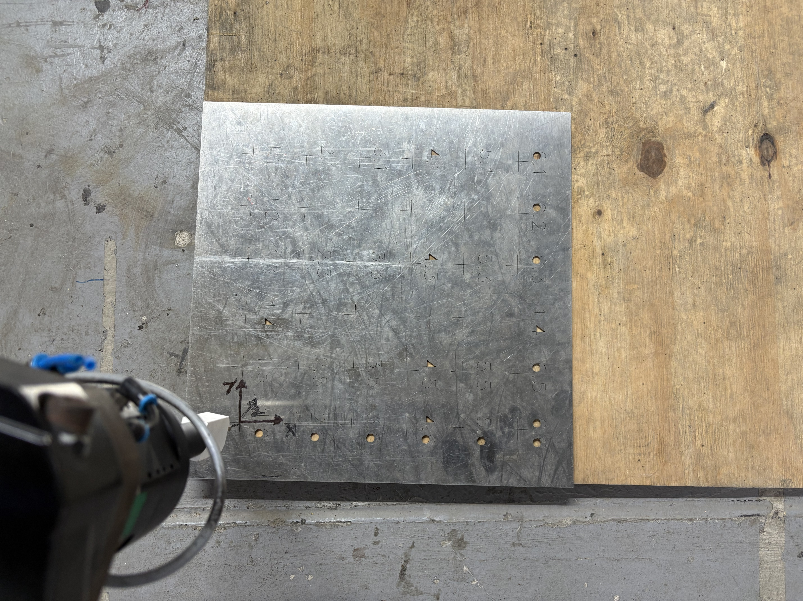
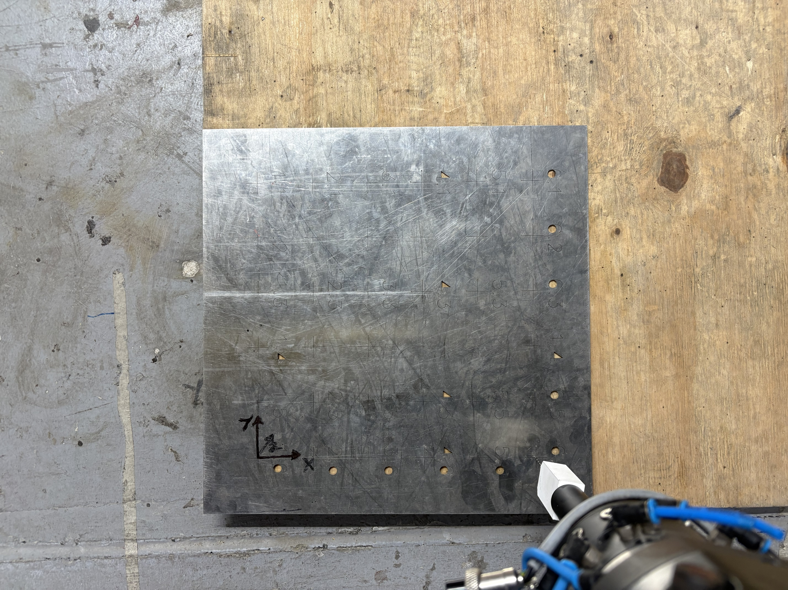
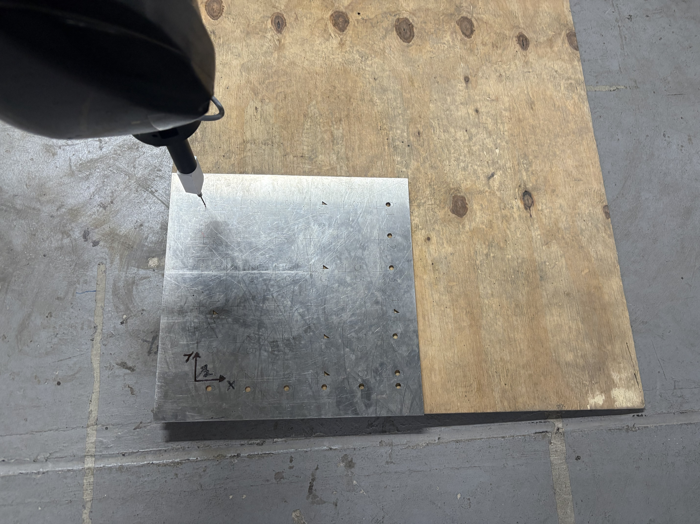

User and Jog Frame Calibration
Three-Point Method For User & Jog Frame
The Three-Point Method allows you to define a custom coordinate system by teaching the following three points. The same procedure is used for both User Frame and Jog Frame.
| # | Point | Description | Image | Calibration Procedure |
|---|---|---|---|---|
1 |
Origin Point (Orient Origin) |
This point defines the origin of the frame. It is the reference point to record the X and Y direction points. The robot will calculate the position of this point as (0, 0, 0) in the new frame. Note: While calculating the all three poins, ensure the tool tip is perpendicular to the frame. |
 |
|
2 |
X-Direction Point |
It defines the direction of the tool’s X-axis. The user can choose any direction for X axis, depending on their application or preferred orientation. |
 |
|
3 |
Y-Direction Point |
It defines the direction of the tool’s Y-axis. The user has to choose Y direction perpendicular to the X direction. The robot will automatically calculate the Z-axis. |
 |
|
| The images given above are Pickup Pallet’s calibration images. The same procedure is used for all other User Frames. See Calibration procedure for each User Frame. |
Key Differences in Usage
-
User Frame: Affects all programmed motions. Use this when programming relative to a part, fixture, or table.
-
Jog Frame: Affects only manual jogging. Useful during setup or when jogging in a frame aligned to the tool or a different plane.
| Jog Frame does not affect robot programs, while User Frame does. |